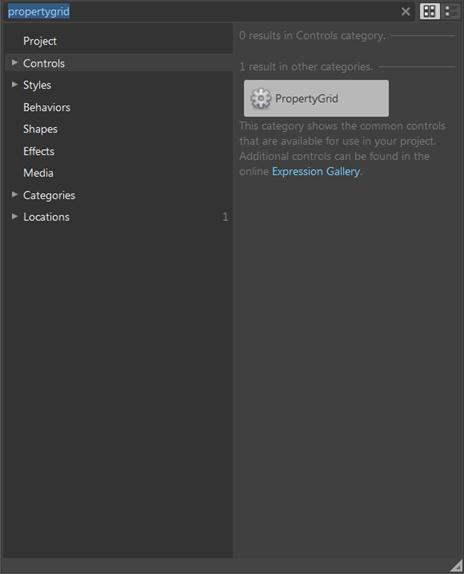
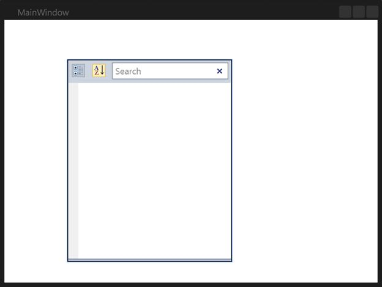

The PropertyGrid control can also be created and configured using Microsoft Expression Blend. To create the control through Expression Blend:
6. Create a WPF project in Expression Blend and add the reference to the following assemblies:
· Syncfusion.Tools.Wpf
· Syncfusion.Shared.Wpf
· Syncfusion.PropertyGrid.Wpf
· Syncfusion.Core
7. Search for the PropertyGrid in the Toolbox.

Figure 809: PropertyGrid in Expression Blend Toolbox
3. Drag and drop the PropertyGrid into the designer. The PropertyGrid control is created as shown in the following screenshot.

Figure 810: PropertyGrid in Expression Blend Designer
The user can customize any part of the PropertyGrid using the template editing feature in Expression Blend.